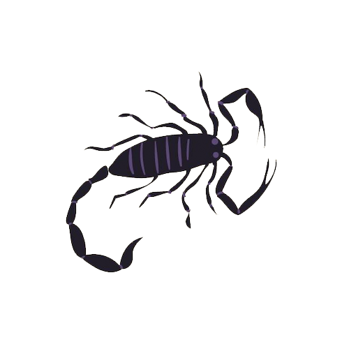

Magaskopet
Generelt
Skorpionen er et vandtegn og kendetegnes ved
sin intense, mystiske og passionerede natur. Skorpionen er kendt for sin dybde og
evne til at gå ind i de mest komplekse og følelsesmæssige aspekter af livet.
Den er yderst beslutsom og lader sig sjældent stoppe, når den først har sat sig
et mål.
Som et mere introvert tegn holder skorpionen ofte sine følelser og tanker for
sig selv, men under overfladen koger der en stærk indre verden. Skorpionen er
ekstremt intuitiv og har en skarp fornemmelse for sandheden, selv når den er
skjult.
Skorpionen er også kendt for sin loyalitet og evne til at beskytte dem, den elsker.
Derudover gør dens stærke intuition og evne til at dykke dybt,
skorpionen til et af de mest komplekse og fascinerende tegn i zodiaken.
Se også generelle studietips her
Studietips
Når du studerer, elsker du at fordybe dig i komplekse emner og afsætte tid til
at forstå dem fuldt ud. Skab et roligt, afskærmet studieområde, hvor du kan
koncentrere dig uden forstyrrelser.
Da du arbejder bedst i dybde, kan det være en god idé at bruge længere perioder
på ét emne, så du kan grave dig ned i detaljerne. Sørg for, at du ikke bliver
distraheret af småting, og hold fokus på det væsentlige.
Skorpionen har også et naturligt talent for at bruge følelser i læring, så prøv
at skabe en forbindelse mellem det, du studerer, og dine egne erfaringer eller
følelser – det hjælper dig med at huske og forstå dybere.

Skorpionen
23. oktober - 21. november